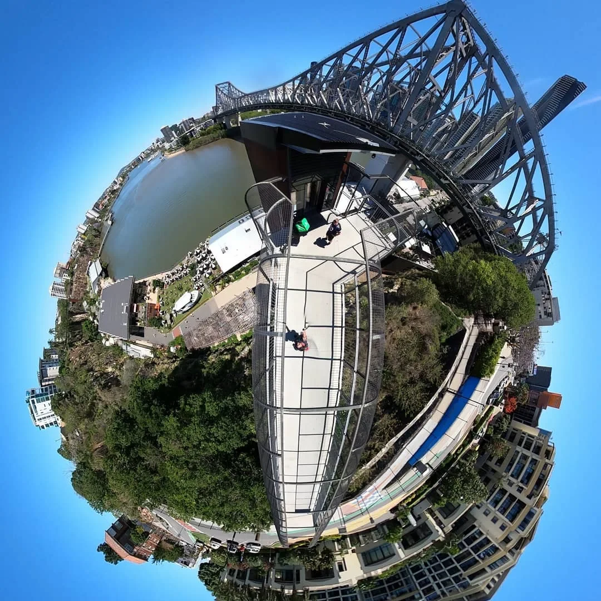

Candidate location · 433 Logan Road, Stones Corner
An address to
work through.
Examine the indoor-area evidence and turn it into a current room and operating brief.
Candidate premises · A current measured plan is the next evidence input
Story Bridge, Brisbane, in a 360-degree tiny-planet photograph by Luke Nathan Hayes / I See Infinity.
Image credit ↗433 Logan Road, Stones Corner
Start with the indoor space.
The useful question is how rooms and supporting facilities could serve people through a full week.
The property was previously described as a serviced-office centre, with a building varying from two to four storeys across the site. Older records place it in Greenslopes. Current research identifies the candidate address as Stones Corner.
Historical office accommodation offers a starting scale for investigation. A current measured plan will show which rooms, circulation, amenities, access routes and technical areas are available for a selected mix of uses.
The current working envelope
Rounded indoor planning assumption
Change this figure in the calculator. The model reserves a separately editable proportion for circulation and support.
Open the capacity model →Read each measure in its own terms
Office area, lease area and usable rooms.
| Measure | What the source records | Use in this exploration |
|---|---|---|
| 5,118 m² | Serviced-office accommodation in the historical comparison for 425 and 433 Logan Road. | An indoor-office reference from the 2017 sale evidence, reproduced in a 2018 valuation report. |
| 5,585 m² | Historical combined net lettable area, including café and retail components. | Keep the office, café and separate retail components identifiable. |
| 7,266 m² | QPS direct lease area reported in Cushman & Wakefield’s Q4 2023 office report. | A lease-reported measure with a different basis from the historical serviced-office figure. |
| 5,000 m² | Editable starting envelope in the capacity calculator. | A rounded planning assumption to replace after current measurement. |
Historical comparison: m3property valuation report, PDF page 67 / printed page 58. Lease report: Cushman & Wakefield, Q4 2023, page 2.
Plans and a current room inventory
Turn an address into a usable brief.
The approved plan set associated with Council application A004942032, dated 17 September 2018, concerns alterations at the Logan Road offices. Its existing-building outlines help locate the development, while the main interior partition layout still needs a current source.
A room inventory can record dimensions, doors, daylight, acoustic conditions, power, accessibility and current fit-out. That supports decisions about desks, teaching, private conversations, making, events and service rooms.
Search Development.i for A004942032 →Measure what is usable
Identify the indoor envelope, the shared support areas and the floor-by-floor room schedule.
Match a selected activity
Record the people, privacy, equipment and service arrangements belonging to that room.
Test the timetable
Compare simultaneous occupancy and changeover with weekly bookings and expected visits.
The tenancy context
A large existing commitment is one part of the conversation.
The Crime and Corruption Commission’s November 2026 report records a 15-year QPS leasing commitment, with a starting annual amount of A$5.8 million indexed at 4%. The premises were subsequently found unsuitable for the intended police use and remained unoccupied.
A civic proposal needs its own agreed route into the property: the parties involved, available space, term, permitted activities, responsibilities and proposed premises contribution. The financial model keeps that proposed contribution separate from the existing QPS lease reference.
Examine the lease-reference arithmetic →CCC Investigation Sphynx, November 2026, executive summary and timeline.